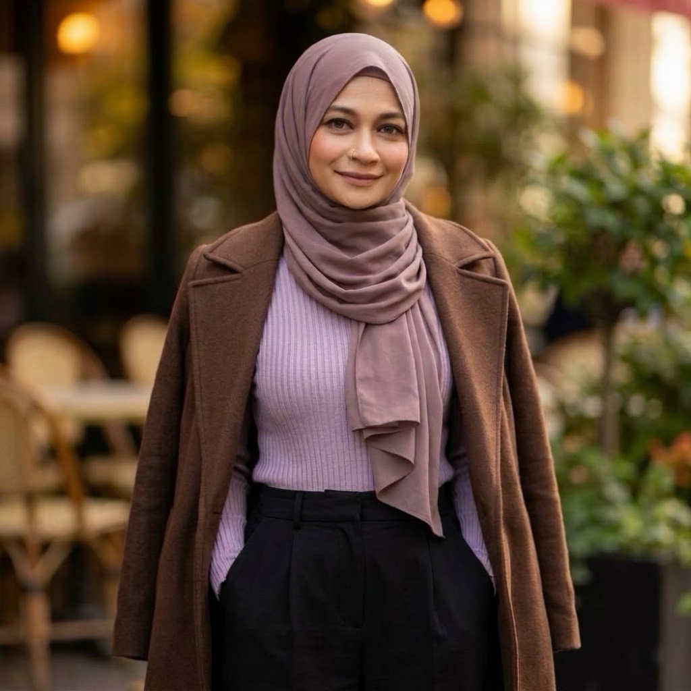

FEATURED PROJECT
Coders Live
A Bangla learning-platform interface connecting courses, blog content, instructor pages, and account screens.

SOFTWARE ENGINEER · AI & FRONTEND
“All that is gold does not glitter.
Not all those who wander are lost.”
01 / A LITTLE ABOUT ME
Always learning.
Always asking why.
I’m a software engineer working across frontend development and applied AI, with experience leading projects and engineering teams.
At Unibox IT, I refine multimodal preprocessing pipelines and collaborate on code, output analysis, and deployment.
I enjoy making complex systems easier to understand—from the interface someone sees to the data and logic behind it.
02 / SELECTED WORK
Browser interfaces, Bangla language tools, and applied machine learning. Explore the ideas, implementation decisions, and source code behind each project.
FEATURED PROJECT
A Bangla learning-platform interface connecting courses, blog content, instructor pages, and account screens.
A browser drawing board with mouse and touch input, brush controls, erasing, and JPEG export.
OCR, multilingual embeddings, and retrieval-assisted answers for questions about Bangla PDFs.
A Telco churn workflow connecting feature preparation and XGBoost with an interactive customer risk form.
A seven-input crop recommendation interface, with supporting soil-health and Power BI artefacts.
03 / RESEARCH & EXPLORATION
Exploring how machine learning can help us understand language, health, and the natural world.
IEEE ACCESS · VOLUME 12 · PAGES 9097–9111
HEALTHCARE · MACHINE LEARNING
Comparing machine learning models and a hybrid stacking ensemble for sepsis prediction, using feature engineering and cross-validation.
Scikit-learn / XGBoost / ANN / MLP
BANGLA · LANGUAGE MODELLING
Training a BERT-style masked language model from a custom configuration, with Bangla text cleaning, WordPiece tokenisation, and Hugging Face Trainer.
Python / Transformers / WordPiece
View notebook (opens in a new tab)04 / EXPERIENCE
From software development to AI engineering. Each role brings a new perspective to the way I build, collaborate, and solve problems.
PRESENT
Current roleAI Engineer
Venice, Italy · Remote
Optimise multimodal pipelines for model performance and data quality, collaborating on code, analysis, and deployment.
MAR 2024 — APR 2025
Senior Software Engineer
Dhaka, Bangladesh · Onsite
Led several software projects and engineering teams, guiding development, code quality, and delivery.
DEC 2023 — MAR 2024
Junior Software Engineer
Dhaka, Bangladesh · Onsite
Built backend logic and REST APIs, designed MySQL schemas, and automated data processing with Python and JavaScript.
05 / EDUCATION
ONGOING
Bangladesh University of ProfessionalsDhaka, Bangladesh
FEB 2020 — JAN 2024
Bangladesh University of Business & TechnologyDhaka, Bangladesh
AUG 2017 — MAY 2019
Birshreshtha Munshi Abdur Rouf Public CollegeDhaka, Bangladesh
06 / MY TOOLKIT
Frontend at heart, with an understanding
of the systems behind the interface.
HTML · CSS · JavaScript · React · Next.js · TypeScript
SQL · MySQL · Data modelling · REST APIs · JavaScript
Python · Scikit-learn · Hugging Face · LangChain · FAISS
GOOD THINGS START WITH A CONVERSATION
A website, a frontend challenge, or an idea ready to take shape.
I’d love to hear
about it.